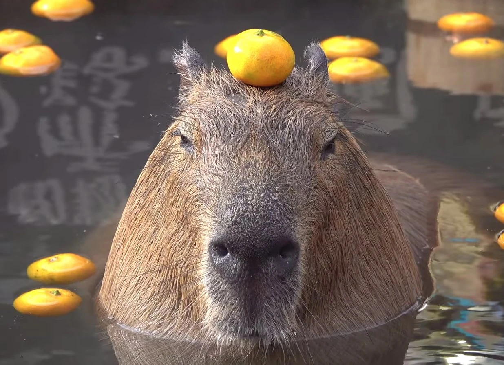
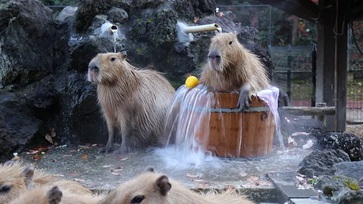
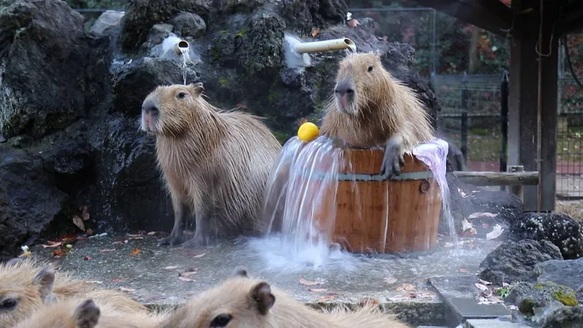
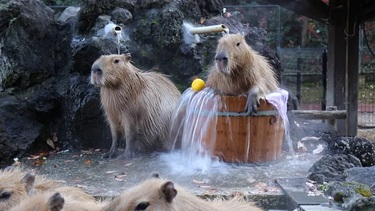

🧠 Inteligencja
Potrafią rozpoznawać swoje imiona i reagować na komendy
🌿 Dieta
Zjadają własne odchody dla lepszego trawienia
💤 Sen
Śpią tylko 4-5 godzin na dobę, głównie w pozycji stojącej
Dodatkowa galeria

 

